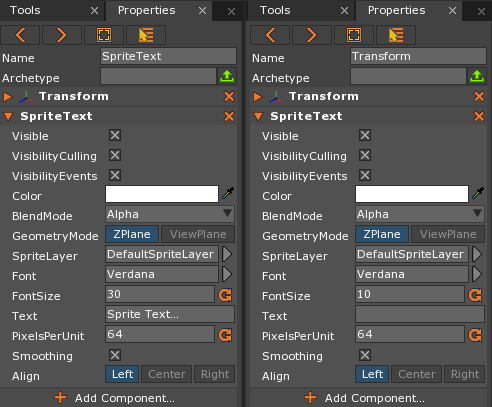
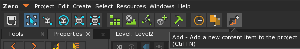
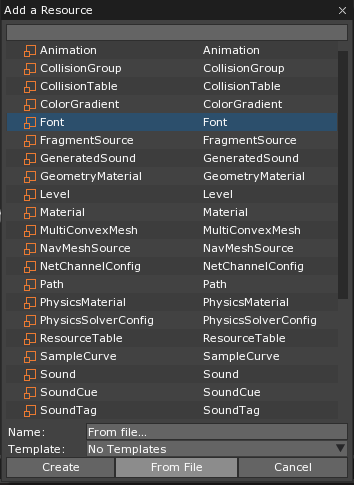
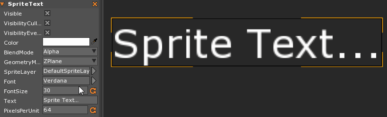
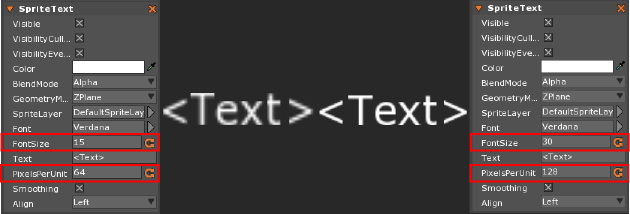
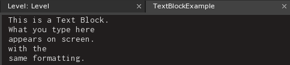
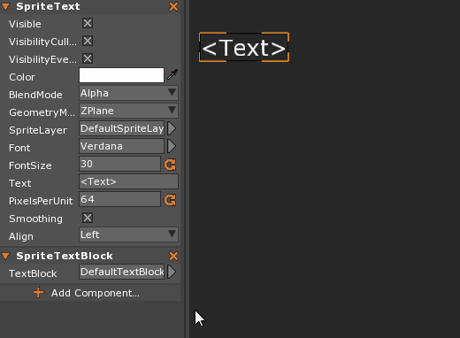

SpriteText
SpriteText is a useful component for quickly adding text into a project that allows the user to easily modify the properties of the text, such as the Font, size, and runtime output. As with Sprites, SpriteText can be added to any existing Game Object.
Common Uses
- Scores, timers, and other HUD texts
- Title, menu and button text
Using SpriteText
Creating SpriteText
SpriteText can be made in different two ways: using the Command : CreateSpriteText or adding the SpriteText Component to any existing Game Object. The only differences in the objects are the values of a few properties:

As can be seen above, only the values of the FontSize and Text differ between the two objects. Since there is such little difference between the two, the choice of whether to create a new SpriteText object can be based on whether there’s already an object in the level that should have the SpriteText component attached to it, or if a completely new object is needed.
Adding new Fonts
Importing and accessing different Font resources is arguably the most important thing to understand regarding SpriteText. Luckily, Zero Engine makes this very simple, allowing the user to drag and drop the Font into the Editor window. Alternatively, the user can use either Command : Add or click on the Add button. Either option brings up the Add a Resource window. From here select Font from the list, then click on “From File”.


This will open a new file explorer window where the user may select the Font or Fonts to import. Once a Font is imported into Zero, simply select the Font property on the SpriteText component and choose the desired Font.

Zero accepts both OpenType Font (OTF) and TrueType Font (TTF).
Changing the Text
Typing the desired text into the Text property and changing the FontSize will adjust the text on screen, but that’s also a bare minimum of what SpriteText is able to do. For example, by adjusting the PixelsPerUnit property, it becomes possible to create different sized Fonts without losing any visual clarity.

TextBlock
Adding Text using a TextBlock requires two elements: a TextBlock resource and the SpriteTextBlock component. These two work in tandem to change the text of the SpriteText component. Much like adding a Font, simply use Command : Add and select TextBlock from the list. This will open a new TextBlock in a new Tab that allows text to be written in it. Once the desired text has been entered, simply add the SpriteTextBlock component to the Game Object and assign the new TextBlock to it.
Note
While TextBlock.Text is bound in Zilch, it is read only and therefore cannot change the text at runtime. The TextBlock will need to be made as a resource and set prior to running the game.


Properties and Methods of SpriteText
SpriteText Events
EnterView:GraphicalEvent- The Graphical Event dispatched to the Object with a SpriteText component entering the view of the current
Camera
- The Graphical Event dispatched to the Object with a SpriteText component entering the view of the current
EnterViewAny:GraphicalEvent- The Graphical Event dispatched to the Object with a SpriteText component entering the view of any Camera in the scene
ExitView:GraphicalEvent- The Graphical Event dispatched to the Object with a SpriteText component exiting the view of the current Camera
ExitViewAll:GraphicalEvent- Graphical Event dispatched to the Object with a SpriteText component exiting the view of all Cameras in the scene
SpriteTextChanged:TextEvent- Event sent to the Object with a SpriteText component when the Text has been changed